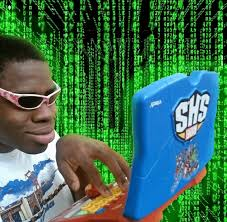

Me gusta explorar y aprender temas relacionados con la programación, la ciberseguridad y la tecnología en general. Disfruto resolver problemas lógicos y algoritmos como pasatiempo. También dedico tiempo a la lectura de artículos de divulgación científica y a practicar idiomas. En mis ratos libres me gusta organizar mis proyectos personales, aprender herramientas nuevas por cuenta propia, escuchar música y compartir tiempo de calidad con mi familia.
